Getting started
- Switch the ergometer on and connect the cockpit to the PC with an RS232 cable (or a USB-RS232 adapter).
- Start
ErgoWattControl.exe. The app connects to the configured device; the connection status is shown at the bottom right. - On the first start, choose “Daum ergo_bike (RS232)” as device and the COM port under ☰ → Settings and check it with Test connection; enter your weight and power limit there as well. To try the app without an ergometer: device “Demo”. The language is set at the top of the settings as well (Language / Sprache).
- Ride: in free training set the power with ↑ ↓ or the mouse wheel – or choose a route, a training or a program in the menu ☰.
The ride view
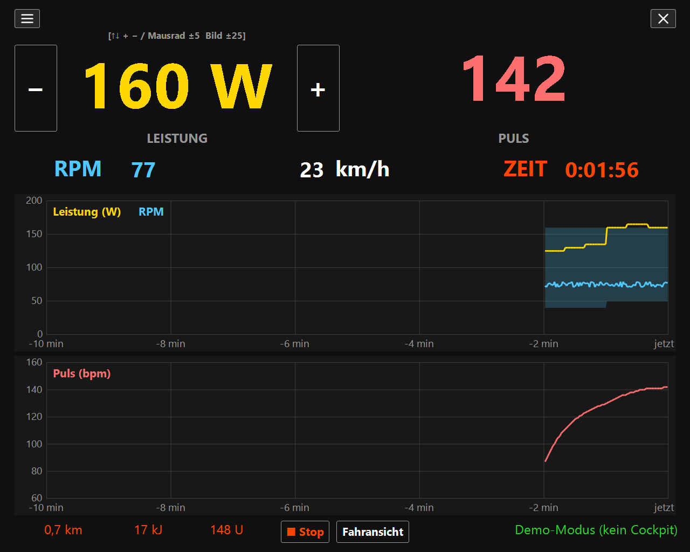
| Area | Meaning |
|---|---|
| POWER (yellow) | Target power in watts, with − / + next to it. If the actual power differs by more than 5 W, [actual … W] is shown above it. |
| Top right, above the pulse | What is being ridden: “Route: name (km)”, “Program: name” or “Recording: name”; the tooltip shows the file. Empty in free training. |
| PULSE (red) | Heart rate from the cockpit’s chest strap or ear clip. When replaying an earlier ride (a route recording, a FIT file or a recording with pulse), a smaller green number to the right shows your pulse back then at the same point – for routes at the same kilometre, otherwise at the same time. It appears as long as “Show the original pulse” is switched on; programs have none. |
| RPM, km/h, TIME | Cadence, speed and riding time. A ▲ next to RPM means “pedal faster”, a ▼ “pedal slower”. |
| Upper graph | Power (yellow) and cadence (blue) of the last 10 minutes. The blue-grey area is the cadence range in which the eddy-current brake can hold the set power (e.g. 40–160 RPM up to 150 W, 50–160 RPM up to 250 W). It belongs to the blue line. |
| Lower graph | Pulse of the last 10 minutes. When riding a route the elevation profile is shown here, for recordings and programs the power profile: at the top the whole training with your pulse (red, scale on the right 60–180), below it the next 10 minutes enlarged (power only). When repeating a recording, the pulse recorded back then also appears in green in the overview if “Show the original pulse” is chosen. |
| Bottom line | Distance, energy and crank revolutions of the running recording, the record button, Ride view/Main screen (change monitor) and the connection status. |
Keys and mouse
The keys always work, whichever element has the focus. The numeric keypad works with and without NumLock – handy with a wireless keypad on the handlebar.
| Key | Free training | Route | Training / program |
|---|---|---|---|
| ↑ + 8 · mouse wheel up | +5 W | 1 gear up | whole profile +5 W |
| ↓ − 2 · mouse wheel down | −5 W | 1 gear down | whole profile −5 W |
| PgUp 9 | +25 W | 5 gears up | profile +25 W |
| PgDn 3 | −25 W | 5 gears down | profile −25 W |
| Enter | Start / stop recording | End training (dialog; Enter again = OK, Esc = keep riding) | |
| 0 Ins | Move the window between the rider’s monitor and the main screen | ||
| F1 | This help, right at the matching section – in every dialog as well | ||
Free training
Without a route or program you set the power yourself (25 W up to the power limit, in steps of 5 W). The brake holds the power regardless of the cadence.
● Record (or Enter) starts the recording, ■ Stop (or Enter again) ends it. A dialog asks for the file name first – see Ending a recording.
Riding a route
☰ → Ride a route … shows the GPX and FIT files from the routes folder (Documents\ErgoWattControl\GPX, see Files and folders). For the selected route you see the elevation profile (coloured by gradient, the steepest climb marked), length, climbing, maximum gradient and the power it costs in 1st gear at 60 RPM. If that is above your power limit, it is shown in red. GPX or FIT file from another folder … fetches a route from elsewhere.
While riding, the app calculates the brake power from gradient, weight (rider + bike), rolling and air resistance and the virtual speed – which results from cadence × gear. You shift as outdoors: a higher gear = faster and harder.
Pulse in the elevation profile: In the overview of the whole route your pulse runs along – today in red, and if the route comes from an earlier ride (a route recording of the app or a FIT file, e.g. an MTB tour from Garmin Connect), the pulse back then in green. Both follow the kilometre, not the time: on the same climb you see straight away how your pulse today compares to the real tour. The scale on the right goes from 60 to 180. You switch the green pulse on or off in the start dialog with “Show the original pulse while riding”.
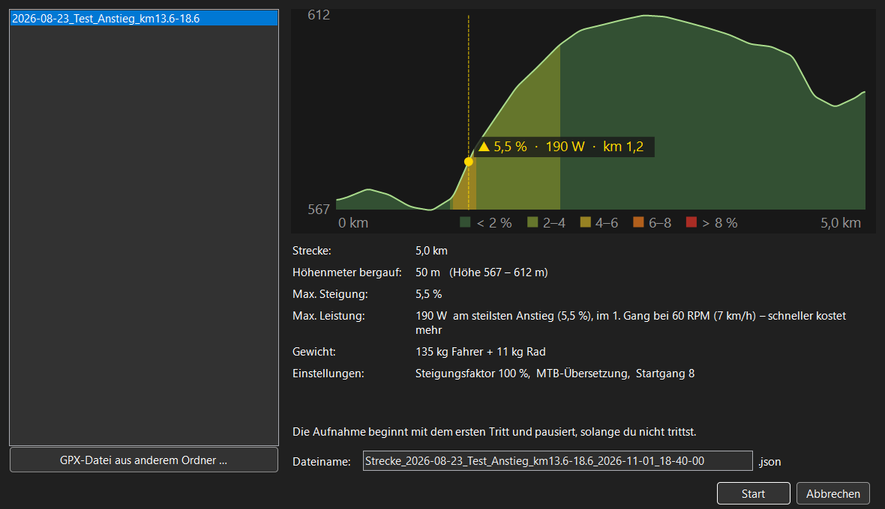
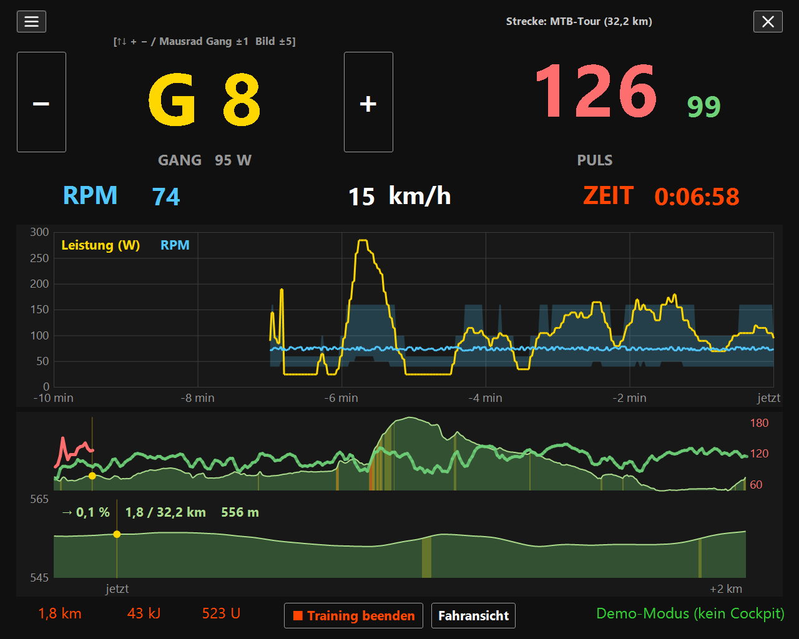
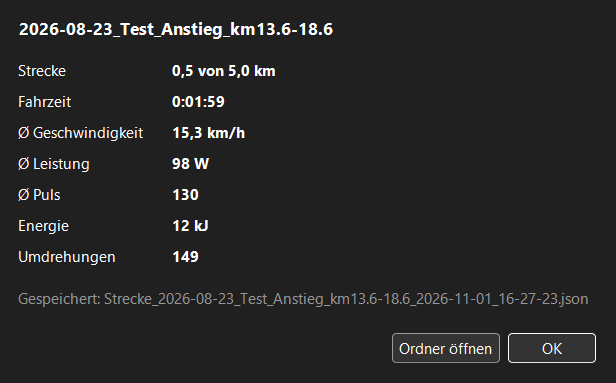
- 28 gears, gearing MTB (lower gears, slow cranking uphill possible) or Road bike.
- The gradient factor makes all climbs flatter (50 % = half as steep) – so hilly routes become rideable.
- The recording starts with the first pedal stroke and pauses while you don’t pedal. At the finish the ride ends with a summary.
- ■ End training (bottom) or ☰ → End training stops early.
Replaying a recording
☰ → Replay a recording … lists your recordings, newest first. For the selected one you see the profile (power and, if you like, the pulse back then), duration, average and maximum power.
- Recording of a route: is ridden as a route again – with the route stored in the recording and its settings (weight, gearing, …), which you can change for this run.
- Free training or program: follows the recorded power. Time only runs while you pedal; ↑ ↓ shift the whole profile.
- Show the original pulse shows the pulse back then for comparison while riding.
- Older recordings in CSV format can still be replayed.
- Recording from another folder … opens a recording from elsewhere, e.g. from a USB stick.
- FIT files of other devices and apps (Garmin Connect, Strava, Zwift, bike computers) can be replayed too: if the file has power data, the ride follows the power back then (the pulse back then runs along in green). If it has no power but GPS and elevation – e.g. an MTB tour without a power meter – it is ridden as a route. Pauses in the file are skipped. In Garmin Connect you get the file via the gear icon of an activity → Export Original. Garmin names it with a number only (e.g.
24087410711_ACTIVITY.fit); the app then shows it asGarmin_2026-08-23_15-57with date and time of the ride and names the new recording the same way. - ■ End training (bottom) or ☰ → End training stops early.
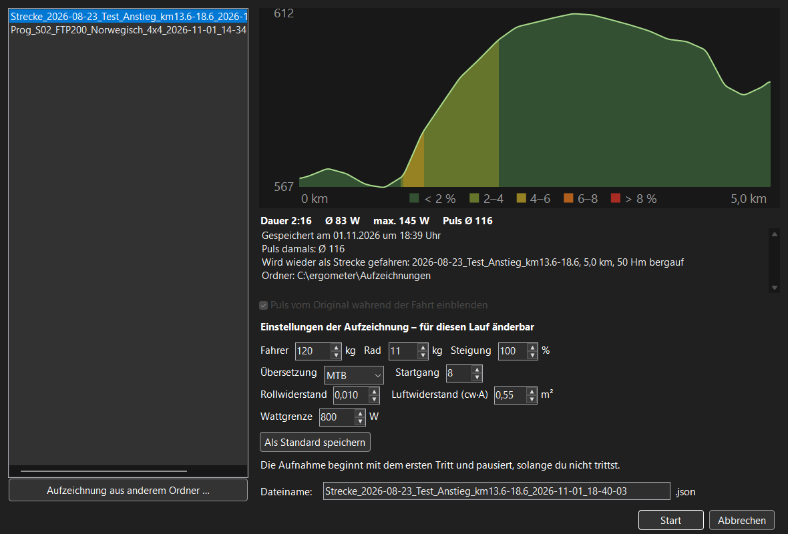
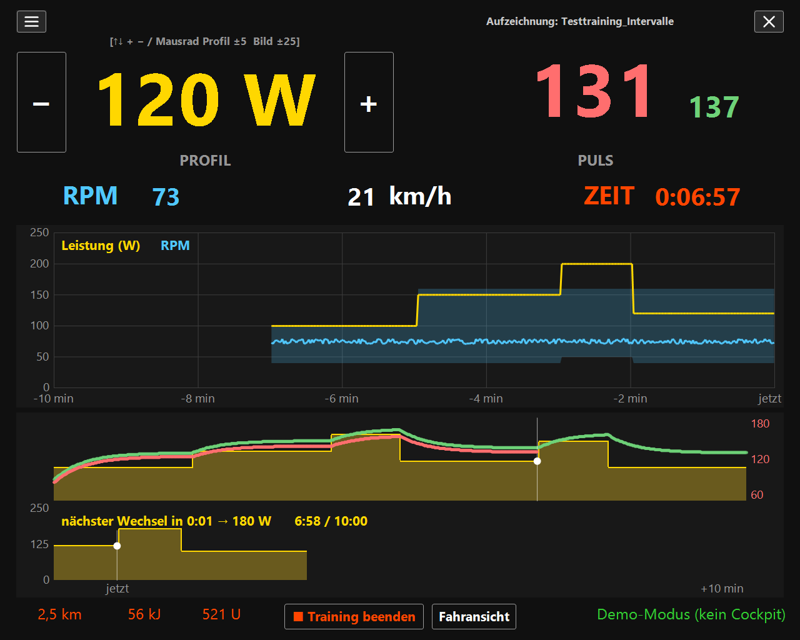
Starting a training program
☰ → Start a training program … lists the training programs with power profile, duration and description.
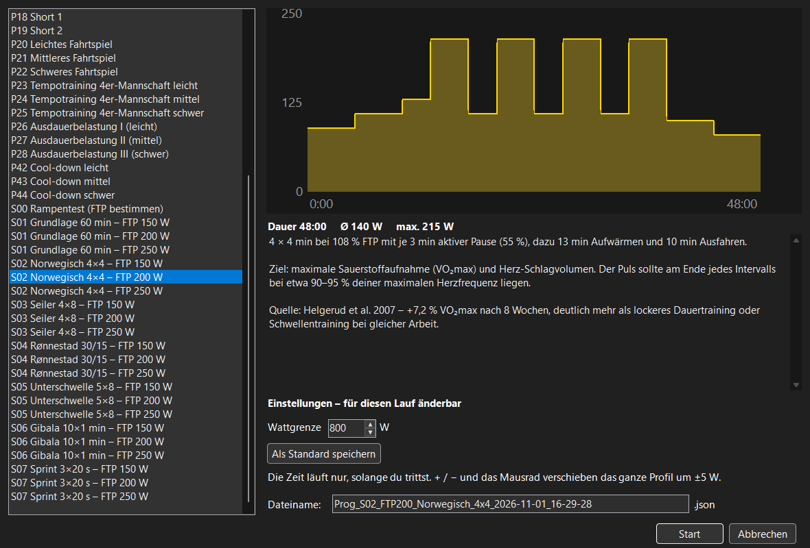
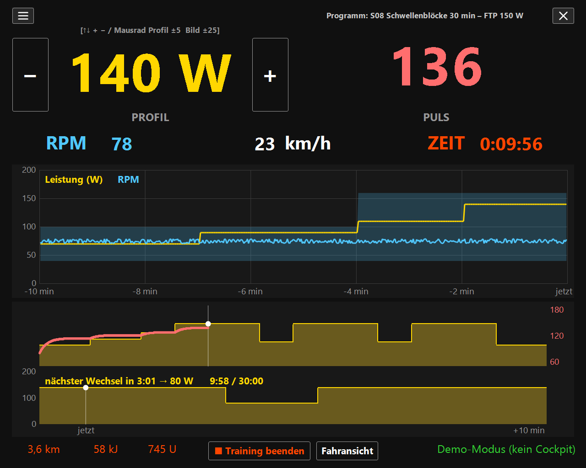
P01–P44: programs from the manual
The power-controlled fixed programs of the 8008 TRS (power tests WHO/BAL, interval, pyramid, mountains, fartleks, team tempo training, endurance, cool-down) with fixed watt values. They are read from the charts of the manual. The pulse programs (29–38) and elevation profiles (39–41) are missing because the app only controls watts.
S00–S08: programs based on current training science
| Program | Main part | What for |
|---|---|---|
| S00 Ramp test | +20 W per minute to exhaustion | Find your FTP |
| S01 Endurance base 60 min | 55 min at 65 % FTP | Base endurance – most of your training |
| S02 Norwegian 4×4 | 4 × 4 min at 108 % | VO₂max (Helgerud 2007) |
| S03 Seiler 4×8 | 4 × 8 min at 98 % | VO₂max and threshold (Seiler 2013) |
| S04 Rønnestad 30/15 | 3 × 13 × (30 s 125 % / 15 s easy) | VO₂max, 20-min power |
| S05 Sub-threshold 5×8 | 5 × 8 min at 90 % | Threshold training with little fatigue |
| S06 Gibala 10×1 min | 10 × 1 min at 115 % | Time-saving interval training |
| S07 Sprint 3×20 s | 3 × 20 s at 200 % | Minimal program, 10 min |
| S08 Threshold blocks 30 min | 3 × 5 min at 92 % | Strength endurance in 30 min, easy on the knees at 85–95 RPM; progress by the length of the blocks |
Every S program exists for an FTP of 150, 200 and 250 W. A typical week: two hard sessions (S02–S06), the rest easy (S01). Sources and details are in Programs\README.md in the project.
Custom programs
Put your own programs in the folder CustomPrograms: Documents\ErgoWattControl\CustomPrograms, next to the exe for the portable version. The button Open the folder for custom programs below the program list opens it. Custom programs are listed with ★ at the top; the app never overwrites anything there.
A program is a JSON file with Name, Description and Profile (power profile). The profile is a list of points [second, watts]: the power of a point holds until the next one, the last point marks the end.
{
"$schema": "./TrainingProgram.schema.json",
"Name": "My intervals 3×2 min",
"Description": "5 min easy, 3 × 2 min brisk, 5 min easy.",
"Profile": [ [0, 80], [300, 140], [420, 80], [540, 140], [660, 80], [780, 140], [900, 80], [1200, 80] ]
}
- Several languages:
NameandDescriptionmay hold one text per language instead of one text, e.g."Name": { "de": "Mein Intervall", "en": "My intervals" }. The app then shows the language of its interface. It still reads older programs withBeschreibungandProfil. - Template: on the first start the app puts
Example_Custom_Program.jsoninto the folder – copy, rename, adapt. - Description of the format:
TrainingProgram.schema.jsonin the same folder is a JSON schema – for JSON what an XSD is for XML. With the line"$schema": "./TrainingProgram.schema.json"an editor such as Visual Studio Code checks the file while you write and suggests the fields. - Creating one with an AI: the folder also holds
CLAUDE.mdandAGENTS.md(same content) with format, rules and conventions. If you start an AI assistant there, such as Claude Code (readsCLAUDE.md) or OpenAI Codex (readsAGENTS.md), it knows at once what a program must look like – you just describe the training, e.g. “30 min with 4 × 4 min at 140 W”. - Rules: the first point starts at second 0, the seconds increase, the power is between 0 and 800 W (the cockpit controls from 25 W, the power limit from the settings applies as well).
- Errors: a faulty file doesn’t appear in the list; under “Not readable” the reason is given, e.g. “Profile, point 3: second 200 must be greater than at the point before” or the line with the JSON error.
FTP and ramp test
The FTP (Functional Threshold Power) is the power you can hold for about an hour. This is how you find it:
- Ride S00 Ramp test: 5 min at 100 W, then +20 W every minute.
- Stop when you can no longer hold the cadence.
- FTP ≈ 75 % of the last step you held for a full minute (example: 260 W reached → FTP ≈ 195 W).
- Choose the S programs with the nearest level and adjust them with ↑ ↓ if needed.
Settings for one run
The start dialogs of Replay a recording and Start a training program show the settings that apply to the run and let you change them for this run only:
- For power profiles (programs, free trainings) only the power limit.
- For a route recording also weights, gradient factor, gearing, start gear, rolling and air resistance – preset with the values it was recorded with.
Default takes the values shown into settings.json; they then also apply to new routes and in the settings dialog.
Power offset (for programs and recordings) shifts the whole power profile for this run in 5 W steps; the preview shows it shifted right away. It goes down at most until the lowest point is at 0 W, up at most until the highest point reaches the power limit. The offset is not saved; during the ride + / − and the mouse wheel shift it further from there.
Ending, renaming, discarding a recording
■ Stop in free training, ■ End training for a route, recording or program and ☰ → End training open an “End training” dialog before anything ends. For routes, recordings and programs it shows the result right away (distance or time ridden, average power, average pulse, energy). The file name is suggested and can be changed.
| Button | Effect |
|---|---|
| OK | Ends the training and saves under the name in the field (unchanged = the name so far). |
| Discard | Ends the training and deletes the recording, without asking again. |
| Keep riding | Back to the ride – nothing ends, the recording goes on. |
| Open folder | Shows the recording in Explorer. |
When a route or program has been ridden to its end (“Finish reached” / “Training completed”), the same dialog shows the result – then without Keep riding, but with Discard and OK.
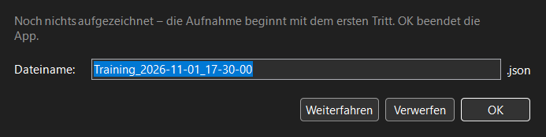
If you close the app during a recording or training (✕ or ☰ → Exit), the dialog appears as “Exit ErgoWattControl”, also with Keep riding, Discard and OK; OK saves and exits the app. You can change the file name of a route, training or program already in the start dialog.
Exporting recordings
☰ → Export recordings … converts recordings for other programs. Select one or more recordings on the left (several with Ctrl or ⇧ click), tick the formats on the right and choose the target folder, then Export. At the top right a small preview shows the recording clicked last: power profile and pulse (green), below it kind, date, duration, distance, average and maximum power and the average pulse.
Delete (or the Del key) moves the selected recordings to the recycle bin after asking – they can be restored from there if needed.
Uploading to Garmin Connect or Strava
Which platforms are offered is set in the settings (tick “Garmin Connect” or “Strava”). For each platform switched on, a tick box appears next to “Export” under Then upload to (FIT only); with none switched on, this part is missing. If a box is ticked, after the export the platform opens in a browser window above the export dialog (on the main monitor) – with both ticked one after the other, first Garmin Connect, then Strava. When you close the browser window you are back in the export dialog; it only closes with “Close”. The first time you sign in there yourself; the app ticks “Remember me” for you (preferably sign in by e-mail; Google often refuses sign-ins in embedded windows). The app never sees or stores your password, only the platform’s sign-in cookie stays in this window (per computer). After that the window opens the import or upload page directly and puts the exported FIT files into it: on Garmin you still click “Import data”, Strava uploads at once, and you save the activity with “Save & View”. If inserting doesn’t work, drag the file from the strip at the bottom of the window onto the page.
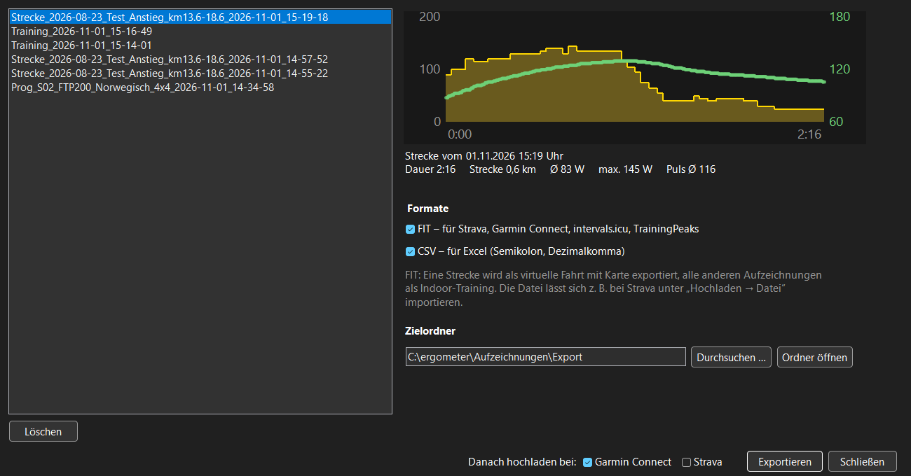
| Format | What for |
|---|---|
| FIT | For uploading to Strava, Garmin Connect, intervals.icu or TrainingPeaks. Contains power, cadence, pulse, speed and distance. A route is exported as a virtual ride – with the positions of the route ridden, so the platform shows it on the map but doesn’t count it as a real ride. All other recordings appear as an indoor training. |
| CSV | For Excel: semicolon and decimal comma, opens directly in a German Excel. One line per second with time of day and all measured values. |
The files are named like the recording, with the extension .fit or .csv. The default target folder is Export\ in the recordings folder; the app remembers formats and folder. On Strava you upload the FIT file under Upload → File, on Garmin Connect under Import → Data – or more conveniently with “Then upload to”.
Recordings in JSON format are exported; older CSV recordings open directly in Excel anyway.
Settings
☰ → Settings …
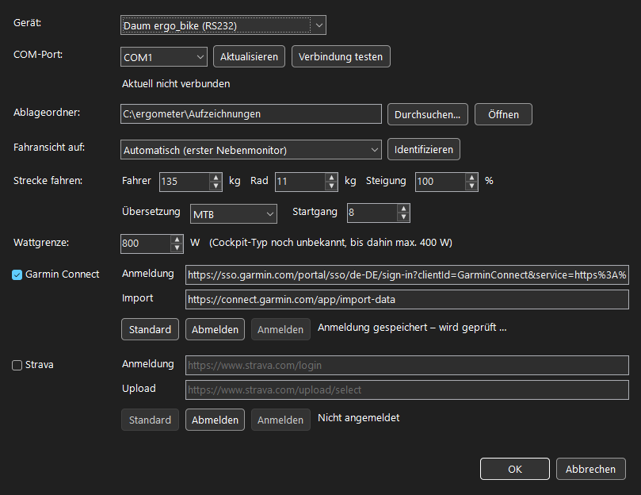
| Field | Meaning |
|---|---|
| Language / Sprache | Language of the app: Automatic (as Windows; English unless Windows is German), Deutsch or English. The new language applies after a restart – the app offers it right away, except during a training. Numbers and dates keep following the Windows settings. |
| Device | Which ergometer the app controls: Daum ergo_bike (RS232), (not tested yet) Bluetooth smart trainer (FTMS, e.g. ErgoBridge) or Demo – a simulated rider to try the app without an ergometer. After saving, the app connects again at once. Bluetooth: the app looks for a trainer with the Fitness Machine Service (FTMS) by itself and prefers the ErgoBridge – an ESP32 on the Daum cockpit's RS232 port, see ErgoBridgeESP32. The PC needs Bluetooth LE (e.g. a USB Bluetooth dongle); there is no COM port to set for it. If another app already controls the trainer, the status line says so. Not yet tried with real Bluetooth and the bike – if it causes trouble, switch back to Daum ergo_bike (RS232). |
| COM port | Port of the cockpit. Refresh reads the ports again (e.g. after plugging in a USB adapter), Test connection checks whether a cockpit answers. |
| Recordings folder | Where the recordings are written. If it can’t be written (network drive or USB stick missing, no rights), the app still saves the ride – in the default folder Documents\ErgoWattControl\Recordings or, if that doesn’t work either, in %LocalAppData%\ErgoWattControl\Recordings – and says so once when the recording starts. Export and “Replay a recording” list such rides as well (export: “(fallback folder)”). |
| Ride view on | Monitor for the ride view; Identify shows each monitor’s number on it. |
| Size of the ride view | As before (default): as large as the monitor, at most as large as the smallest connected screen – 1280 × 1024 in demo mode. Whole monitor fills the chosen monitor; a fixed size (in screen pixels, only those that fit the monitor) is shown centred. Applies at once after OK, on the main screen as well. |
| Riding a route | Rider and bike weight, gradient factor, gearing, start gear. |
| Power limit | Highest power the app sets. The cockpit 8008/8080 allows up to 800 W, others 400 W. |
| Garmin Connect, Strava | The tick switches uploading to the platform on – only then does the export dialog offer “Then upload to”. Plus the address of the sign-in page and of the import or upload page (for “Then upload to”) each. Default resets both, Sign out deletes the sign-in saved in the platform’s window on this computer, Sign in only opens the sign-in page in a browser window above the settings (only without a saved sign-in); after signing in the window closes by itself and you are back in the settings. When the settings open, the app checks invisibly whether a saved sign-in is still valid and shows “valid” or “expired – please sign in again”; then Sign in can be used again. |
☰ → About … shows the version of the app (with the commit it was built from), links to the project page on GitHub, to new versions and to the online help, and the folders for settings and data.
More values are in settings.json (see Files and folders), among them the patterns of the file names:
| Setting | For | Default |
|---|---|---|
FileNameTraining | free training and replayed recording | Training_{Date}_{Time} |
FileNameRoute | riding a route | Route_{Route}_{Date}_{Time} |
FileNameProgram | starting a training program | Program_{Program}_{Date}_{Time} |
Placeholders: {Date}, {Time}, {Route}, {Training} (replayed recording), {Program} (program file). The German placeholders of older versions ({Datum} etc.) are converted at start. The ride values – weights, gradient factor, gearing, start gear and power limit – are grouped under "Ride", which also holds RollingResistance (0.010) and DragAreaM2 (drag area cd·A, 0.55 m²). Older settings.json files with these values on the top level are taken over and converted at start. "Language" is "auto", "de" or "en".
Files and folders
The app keeps its data in the usual Windows folders – wherever it is installed:
| File / folder | Location | Content |
|---|---|---|
settings.json | %AppData%\ErgoWattControl | Settings; created on the first start. |
ErgoWattControl.log | %AppData%\ErgoWattControl | Log: details when a file could not be loaded or written, unexpected errors and dropouts of the cockpit. An unreadable settings.json is kept as settings.json.defekt, and the app starts with default values. |
Recordings\ | Documents\ErgoWattControl | Recordings (default recordings folder, changeable in the settings; older installations keep their folder Aufzeichnungen\). |
GPX\ | Documents\ErgoWattControl | Routes for “Ride a route”. |
Programs\ | Documents\ErgoWattControl | The programs shipped with the app. They are inside the exe; at start the app writes missing or changed files again – so changes to these files are overwritten. |
CustomPrograms\ | Documents\ErgoWattControl | Custom programs (with ★ in the list). The app puts the JSON schema, CLAUDE.md/AGENTS.md for AI assistants and once a template there; it never touches your files. |
WebView2…\ | %LocalAppData%\ErgoWattControl | Browser profiles of the help window and the upload windows (WebView2-Garmin, WebView2-Strava with the saved sign-in). “Sign out” in the settings deletes the respective profile. |
Portable: if a settings.json lies next to the exe, everything stays in the program folder – settings, ErgoWattControl.log, Recordings\, GPX\, Programs\ and CustomPrograms\ are then next to the exe. Older installations and ZIP copies keep working unchanged; for a USB stick just put a (possibly empty) settings.json next to the exe.
Setup: it installs the app for the signed-in user to %LocalAppData%\Programs\ErgoWattControl, with a shortcut in the Start menu and – if ticked – on the desktop. If the .NET 10 Desktop Runtime is missing, it installs it as well. At the end you can start the app right away, in demo mode if you like. When uninstalling (Windows Settings → Apps), settings and recordings are kept.
Recordings (JSON)
A recording contains the kind (training, route, program), start and end, the settings at the start, the target (the route every 10 m with elevation and coordinates, or the power profile) and one line of measured values per second: target and actual power, RPM, pulse, speed, distance, energy, revolutions, for routes also gradient and gear. Keys and column names are English (Kind, Columns, Values, Power_W, …) in every language; recordings of version 1.x with German keys are still read. The file is written completely every 10 seconds – after a crash or power cut at most these seconds are missing.
Custom programs
Custom programs belong in CustomPrograms\ – structure, rules and template are under Custom programs.
Start parameters
| Call | Effect |
|---|---|
ErgoWattControl.exe | Normal operation with the cockpit. |
-demo [file] | Demo without an ergometer (like “Device: Demo” in the settings): a simulated rider pedals at about 75 RPM. With a GPX file this route starts at once, with a recording or program this one is replayed. |
-main | Starts on the main screen instead of the rider’s monitor (can be combined with -demo). |
-help | Shows the parameters. |
When something doesn’t work
“Connecting …” doesn’t go away
- Is the ergometer switched on and the cable on the right port? Test connection in the settings.
- After a cockpit reset the app connects again by itself.
Graph and countdown stop now and then
If the cockpit sends no data for a few seconds, the graph draws nothing, the numbers stand still and the countdown to the next change stops (gaps over 5 s don’t count as program time ridden). At the bottom right “no answer – trying again …” is shown briefly, then the app connects again by itself. Single missing answers it asks for again at once – you don’t notice those.
- Windows update waiting for a restart: if an update is waiting for a restart – especially a driver for ports (e.g. “Intel Ports Driver Update”) –, old and new driver versions often run mixed, and Windows works in the background. That can cause exactly such dropouts on the serial port. Restart the PC before training.
- Cable and adapter: connectors firm? With a USB-RS232 adapter try another USB port, preferably directly on the PC rather than on a hub.
- What happened is in the log
ErgoWattControl.log: “Cockpit connection … lost” with the cause, “reconnected after … s” and “answered after … retry/retries”, “Reply does not match request” (a telegram out of step, discarded and asked for again) and “Cockpit in program … instead of free training” (after a cockpit reset the app sets it up again; if that fails three times in a row it reconnects) – with the time of day, so dropouts can be compared with the ride. - If odd behaviour persists (e.g. an export that suddenly fails), restarting the app often helps.
The power doesn’t arrive / ▲ next to RPM
The eddy-current brake can only hold a power within a certain cadence range (blue-grey area in the graph). At high power you have to pedal faster – above 250 W at least 60 RPM, above 500 W at least 100 RPM.
A route is too hard
Lower the gradient factor (e.g. 50 %), choose a lower gear or switch to MTB gearing. The power is capped at the power limit in any case.
A file can’t be loaded
The message gives the reason; the full details are in the log ErgoWattControl.log (in %AppData%\ErgoWattControl, next to the exe when used portably).